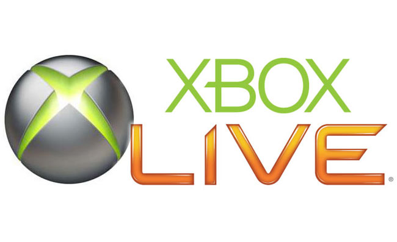

NOTICIAS
Mitología griega y steampunk se unen en ILIOS: Betrayal of Gods
El próximo martes, 17 de mayo, se iniciará la campaña de recaudación de fondos en Kickstarter para el proyecto ILIOS: Betrayal of Gods, un título independiente de Aurora Studio, que ha creado títulos como el juego de rol no oficial de Saint Seiya. En
esta ocasión apuestan por la mitología griega para crer una aventura de acción en dos dimensiones y alta resolución que combinará el mundo clásico con la estética steampunk inspirándose fuertemente en los textos homéricos. Su objetivo
será conseguir 100.000 dólares en Kickstarter para financiar el juego.
Conoce el juego de Blancanieves que no pudo llegar al NES
Un coleccionista llamado Sean McGee encontró un prototipo de un juego de Blancanieves para NES que nunca fue publicado. La historia de este inusual hallazgo es la siguiente. En la década de los 90, el estudio japonés SOFEL tenía planeado lanzar un juego
llamado Happily Ever After. Este título estaba basado en la película animada del mismo nombre que, en contraste con su precuela Snow White and the Seven Dwarfs, tuvo poco éxito. El fracaso del filme provocó que, pese a haber aparecido
en varias revistas, este título fuera cancelado. El proyecto cambió de estudio desarrollador y se mudó a otra plataforma más poderosa: el Super NES, donde finalmente debutó en 1994. Durante muchos años, se pensó que a versión original
de Happily Ever After se había perdido para siempre, hasta que hace poco Sean McGee se topó con un cartucho que sorpresivamente contenía el juego completo. Happily Ever After no era un juego casual, sino más bien difícil y requería
que los jugadores efectuaran ataques y saltos precisos tan sólo para sobrevivir. Ahora que esta entrega ha sido preservada en formato digital es posible disfrutar de ella en emuladores. A continuación te invitamos a ver el juego
en acción.
Un estudio revela cual es el país mas interesado en la Realidad Virtual
Según un estudio que ha realizado Newzoo, el 16% de los españoles estan interesados con algún tipo de producto relacionado con la realidad virtual de aquí a los próximos seis meses. La metodología de estudio de Newzoo implica entrevistar a través de cuestionarios
online a 3.000 americanos y 2.000 personas de otros países de Occidente, incluyendo España, Italia (cuyo interés está en el 13%) y Rusia, donde el 47% de los entrevistados respondieron que no estaban todavía seguros de si adquirirían
un casco de realidad virtual este año. Comparando los resultados con el resto de países, en España es donde más interés existe en este nuevo tipo de tecnología, superando incluso a Estados Unidos (12%).
Problemas con los nuevos drivers de NVIDIA

NVIDIA lanzó ayer noche una serie de nuevos drivers para sus tarjetas gráficas GeForce con el objetivo de mejorar el rendimiento de The Division y Need for Speed en PC,Sin embargo, los usuarios de compatibles están informando de que
sus equipos sufren multitud de problemas con estos drivers (versión 364.47), como pantallazos azules, imposibilidad de iniciar Windows, pantallazos negros, etcétera; La causa es desconocida, por lo que se recomienda no instalarlos
hasta que NVIDIA encuentre la raíz del problema y lo solucione. En el caso de que os arriesguéis a descargarlos, es recomendable que realicéis la instalación de forma manual y evitando seleccionar la opción "Express".
Nuevas ofertas semanales en Xbox Live

Microsoft ha desvelado las nuevas ofertas semanales de las que podrán disfrutar los usuarios de Xbox Live Gold desde hoy y hasta el próximo día 14 de marzo, tanto para Xbox 360 como para Xbox One.Entre las ofertas de esta semana destacan
juegos como Life is Strange, Mad Max, Thief, L.A. Noire y Max Payne 3, entre otros.
Ya está disponible la actualización gratuita de marzo de Star Wars: Battlefront

Electronic Arts ha anunciado que la actualización gratuita de marzo ya está disponible en Star Wars: Battlefront. Entre las novedades de este parche nos encontraremos con la llegada de una nueva misión cooperativa (que también podremos
jugar solos) ambientada en Tatooine, así como un nuevo mapa multijugador en el que luchar por la causa de la Alianza Rebelde o por la gloria del Imperio en la luna de Endor.Se prevé además que durante el mes de marzo, todavía sin
fecha concreta, Star Wars: Battlefront reciba su primera gran expansión de pago
Microsoft cancela Fable Legends y negocia el cierre de Lionhead Studios

Microsoft acaba de comunicar, a través de su web oficial, el futuro cierre de Lionhead Studios y la cancelación del desarrollo de Fable Legends, el juego que estaba preparando el estudio.La beta permanecerá abierta hasta el 13 de abril,
pero ya no aceptarán nuevos jugadores. Estos cambios forman parte de una reestructuración dentro del seno de Microsoft Studios, que también se ha visto a cesar Press Play Studios, el equipo de desarrollo afincado en Dinamarca,
que hasta la fecha estaba programando Project Knoxville, y que en su haber tienen juegos como Max: The Curse of Brotherhood y Kalimba.
LUCHA: Regreso al Pasado: Street Fighter II 25 Aniversario

En 1991, un videojuego apareció en los salones recreativos para poner patas arriba la industria del videojuego. En 2016 se cumplen 25 años de la aparición de dicho título al tiempo que una nueva entrega de la franquicia irrumpe en
el mercado. Es el momento de homenajear a Ryu y compañía lanzando al aire una buena salva de Hadokens,Dicen que la Historia, esa con H mayúscula, esa que sienta cátedra y pasa a formar parte tanto de los libros de texto como del
legado de la humanidad, la escriben los vencedores. Sin embargo, la historia que nos disponemos a narraros ahora no comienza rememorando las gestas y hazañas de un vencedor, sino de un humilde y corriente videojuego que 29 años
atrás pasó de puntillas por los salones recreativos. Dicho videojuego respondía al nombre de Street Fighter. Pocos le hicieron caso en su momento, dado que adolecía de no pocos fallos que lastraban su jugabilidad, perteneciendo
además a un género más que minoritario como era el de la lucha versus uno contra uno. Tampoco es que lo tuviera fácil para darse a conocer, puesto que su distribución en salones arcade estuvo muy restringida debido a la propia
naturaleza de su sistema de control, el cual usaba seis botones de ataque cuando por entonces lo habitual eran dos, o a lo sumo tres botones los que un juego necesitaba para gestionar todos sus comandos.